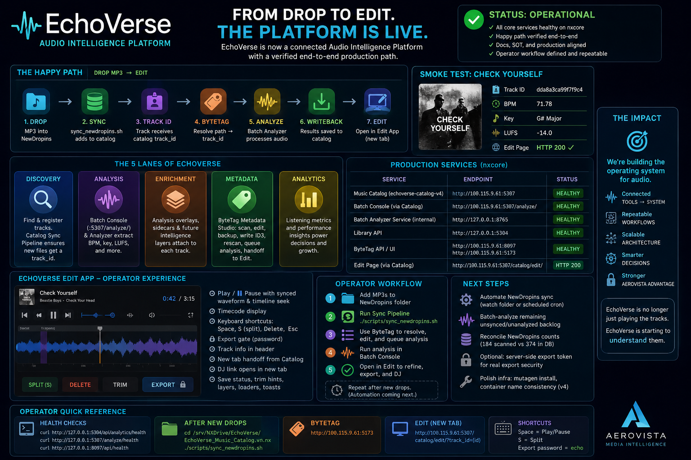

EchoVerse is now an Audio Intelligence Platform.
EchoVerse crossed a major production milestone: new audio can now move through a verified path from dropped MP3 to catalog ID, ByteTag metadata workflow, analysis writeback, and Edit handoff.
ByteCast: From Drop to Edit
A shareholder and employee-ready audio briefing covering what changed, why it matters, what was verified, and where EchoVerse goes next.
What changed
EchoVerse is no longer just a music player with supporting tools. It now has a connected operating loop for audio intake, catalog registration, metadata editing, analysis, writeback, and edit handoff.
The most important platform gap was closed: NewDropins files can now enter the catalog and receive a track ID before analysis and metadata work. That makes ByteTag part of the real production path instead of a side utility.
The verified happy path
This is the current operator path after new audio is added.
Drop MP3
New audio lands in the NewDropins folder.
Sync
sync_newdropins.sh registers files with the catalog.
Track ID
The file receives a catalog track_id.
ByteTag
Metadata Studio resolves the path and queues work.
Analyze
Batch Console processes BPM, key, loudness, and more.
Writeback
Analysis results save back to the catalog.
Edit
The track opens in the Edit app in a new tab.
The five lanes of EchoVerse
The platform now has a clear operating model. Each lane has a job, and each lane can improve without breaking the others.
Discovery
Find, register, and catalog new audio through Library API and sync workflows.
Analysis
Extract technical audio intelligence through the Batch Console and analyzer.
Enrichment
Attach overlays, sidecars, and future intelligence layers to each track.
Metadata
Use ByteTag to scan, edit, write ID3, backup, rescan, and hand off to Edit.
Analytics
Turn listening metrics and catalog data into better operating decisions.
Production status
The production paths and documentation now match the current operating reality.
| Component | Endpoint | Status |
|---|---|---|
| Music Catalog | :5307 | Healthy |
| Batch Console | :5307/analyze/ | Healthy |
| Batch Analyzer Service | internal :8765 | Internal |
| Library API | :5304 | Healthy |
| ByteTag UI / API | :5173 / :8097 | Running |
| Edit Page | /catalog/edit/ | HTTP 200 |
Operator quick reference
The current manual step is now a repeatable workflow, not a missing integration.
curl http://127.0.0.1:5304/api/analytics/healthcurl http://127.0.0.1:5307/analyze/healthcurl http://127.0.0.1:8097/api/healthcd /srv/NXDrive/EchoVerse/EchoVerse_Music_Catalog.v.nx && ./scripts/sync_newdropins.shhttp://100.115.9.61:5173http://100.115.9.61:5307/catalog/edit/?track_id={id}Next moves
The next phase is hardening, not invention. The system should now become more automatic, more measurable, and cleaner for operators.
Visual brief
Use these graphics as companion visuals for the internal post, shareholder note, employee Signal update, or embedded newsletter block.
Primary landscape infographic for the Signal hero and internal update.

Detailed dashboard poster for operator review and platform walkthroughs.
Transcript
Use this for accessibility, newsletter syndication, or recording the final voiceover.
Read the ByteCast transcript
Bottom line
EchoVerse now has a working production path from dropped audio file to catalog-aware, analyzed, metadata-ready, editable track.
The docs are aligned. The services are healthy. The operator workflow is clear. The next phase is automation, backlog processing, count reconciliation, and export hardening.